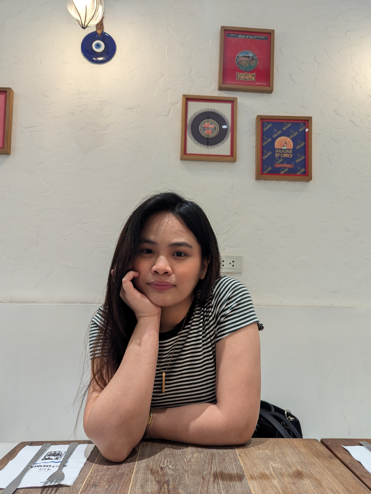

Hi! My name is Rita Vargas. I'm a web developer with a passion for building websites that are both functional and user-friendly.
Before entering the world of web development, I built my career in the BPO industry, where I advanced from a support agent to a Team Lead role. Those years taught me valuable lessons about leadership, teamwork, organization, and communication—skills that continue to shape me today.
I'm always looking for opportunities to learn something new and improve my skills. Whether working independently or collaborating with a team, I bring dedication, curiosity, and a growth mindset to every project.
Outside of work, I'm a proud cat lover, an avid reader, and an occassional guitar player.